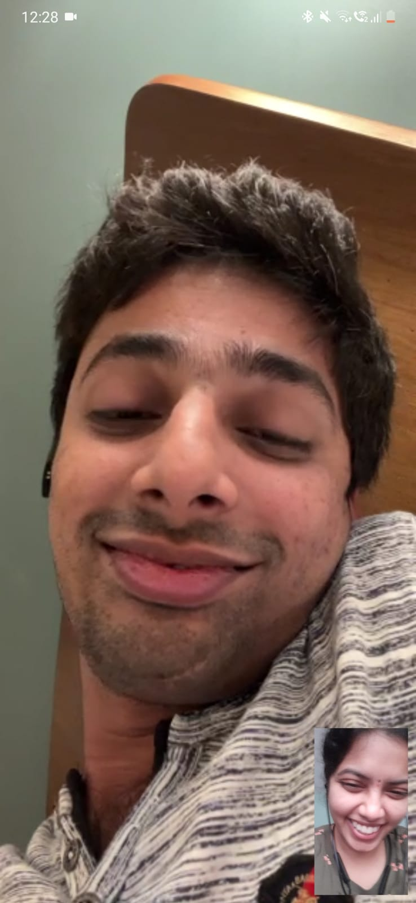
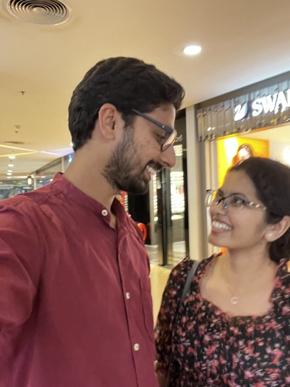
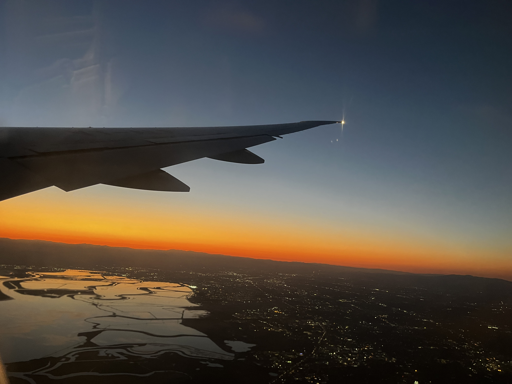
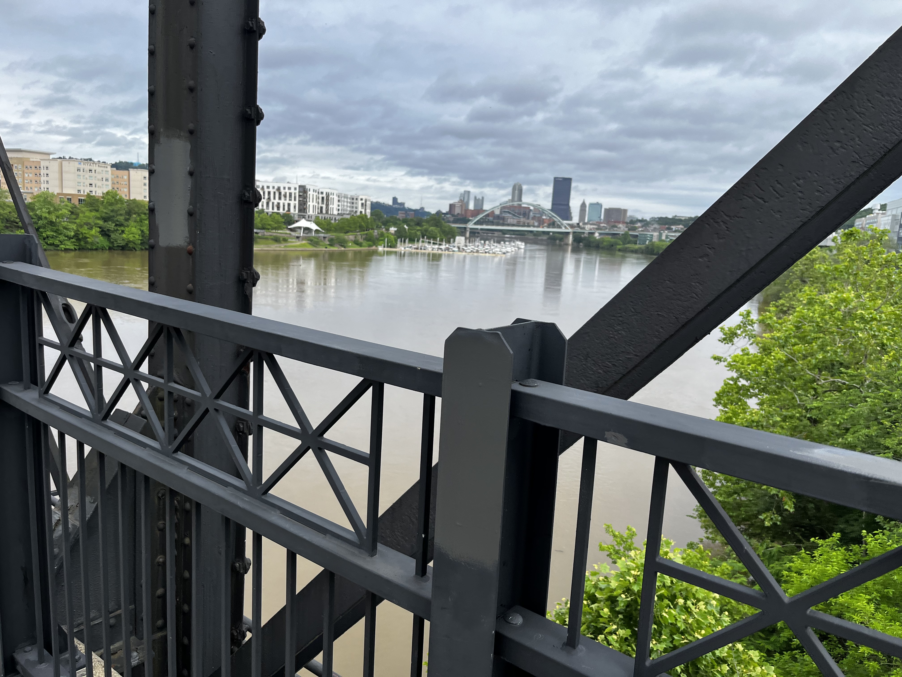

1994 & 1996: Two Separate Worlds
Our stories began in different cities in the same state, two small dots on a map, completely unaware of the other. You in Ongole, and me in Mahabubabad.
2007: A Fateful Move
My world shifted when my family moved to Hyderabad. Little did I know, this move would place me in the same city as my future. We were in the same city, yet worlds apart.
2010-2012: Sri Chaitanya Satya Sai complex
Our paths finally crossed. We walked the same hallways of Sri Chaitanya, but we were just faces in the crowd to each other. We saw each other, but we didn't truly *see* each other yet.

2013: The First "hi"
I moved to Roorkee for my undergrad, and you stayed in Hyderabad. The distance grew, but technology brought us a connection. A simple Facebook message started it all. Our friendship began to quietly bloom across the miles.
hi

2016-2019: Ships in the Night
I moved to Delhi for work. We were still in touch... on WhatsApp.
Story of my life
Whenever I visited Hyderabad, I came close to you, yet couldn't find the courage to ask to meet you. The distance felt even greater when I was physically near you.
Back to Distance
I returned to Delhi while you stayed in Hyderabad. The physical distance between us grew again, but our WhatsApp conversations kept us connected across the miles.

You visited Delhi
When you visited Delhi, I was right there in the same city. But again, I couldn't gather the courage to tell you I wanted to meet. We were so close, yet so far apart.
2019: Oceans Apart
I moved to the US. The distance between us now became oceans. We still chatted, but the unspoken feelings remained just that—unspoken. I often wondered what you were thinking, thousands of miles away.
2021: A Leap of Faith
And then, you did something braver than I ever could. You built up the courage and sent a message that changed everything. It was the spark that we both needed.
"I think I've had a crush on you."
But little did I know that I would be making the biggest mistake of my life. Everything I wanted was in front of me. But only the stupidity in me prevailed.

2022: Was I Too Late?
Time passed, and a distance grew between us after your message. But I could never forget it. I finally gathered my own courage and messaged you, hoping I hadn't lost my chance. The universe was on my side. You were still waiting for me.
October 2022: After All This Time
I flew to Hyderabad and saw you for the first time since we were teenagers. It felt like no time had passed at all. Seeing you again, I knew this was real. This was my future.
March 2023: Engaged!
I came back to India again, this time to make a promise. We got engaged!

Engaged but Apart
But once again, distance won the battle. After our engagement, I returned to Santa Barbara while you stayed in India. We were engaged closer then ever before, yet the ocean still separated us. The promise of forever made the distance both sweeter and more painful.

September 2023: Mr. & Mrs.
We got married! It was the happiest day of my life. Surrounded by family and friends, we finally became husband and wife. The joy was overwhelming, and for that moment, everything was perfect.

Another Ocean Apart
But the challenges weren't over. I had to return to the US alone just days after our wedding. Being married but living continents apart was one of the hardest things we've ever done. The distance felt even more painful now that we were officially husband and wife.
September 2024: Our Home in Santa Barbara
After a year of waiting, we won the war against distance. We started our life together in Santa Barbara. The wait was finally over. All the goodbyes had led to this one beautiful hello.

Summer 2025: Just One More Goodbye
Our story had one more test of distance. My internship took me to Pittsburgh for the summer. It was hard, but we knew it was temporary. We knew we were experts at this by now.
Today: Our Anniversary
And now, we're celebrating our anniversary together in the beautiful Mammoth Lakes, surrounded by the majestic Sierra Nevada mountains. Our winding path, with all its goodbyes and hellos, has made our bond unbreakable. The distance was never an obstacle; it was just the space our love grew to fill.
Happy Anniversary bujjamma! To a lifetime of being in the same place, at the same time.